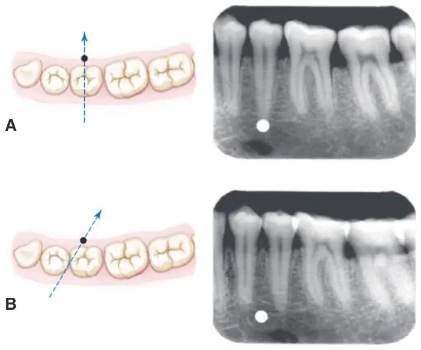
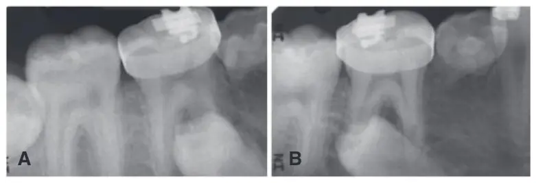

نسخه استخراجشده؛ ترجمه یا تأیید علمی انجام نشده است. وضعیت: captured
مسئلهی بنیادین: «یک محدودیت ذاتی رادیوگرافی تخت، ماهیت دوبعدی تصویر است. اغلب دندانپزشک باید اطلاعات سهبعدیای به دست آورد که رابطهی فضایی ساختارهای تصویرشده را توصیف کند» — مثلاً محل یک دندان نهفته یا یک جسم خارجی درون فک.

و سه رویکرد برای رمزگشایی روابط سهبعدی:
و چرا دو روش نخست هنوز مهماند: «این تکنیکها ارزشمندند چون تصویربرداری CT ممکن است بهآسانی در دسترس نباشد، یا حتی لازم نباشد اگر دندانپزشک از پیش چند نمای پریاپیکال از ناحیهی مورد نظر دارد.»
و روش اول — دو نمای عمود بر هم: «برای رادیوگرافی دندانها و ساختارهای حمایتی، دو پروجکشن مورد استفاده پریاپیکال و اکلوزال مقطعیاند.»
و یک مثال، منطق را روشن میکند: برای یک کانین نهفتهی ماگزیلا، «رادیوگرافی پریاپیکال کانین نهفته را در ابعاد مزیودیستالی و فوقانی-تحتانی مکانیابی میکند، و رادیوگرافی اکلوزال ماگزیلا اطلاعات را در ابعاد مزیودیستالی و باکولینگوالی فراهم میکند. اطلاعات ترکیبشده به پزشک اجازه میدهد دندان نهفته را در هر سه بُعد مکانیابی کند» — که برای برنامهریزی جراحی لازم است.
و یک محدودیت مهم این روش: «این رویکرد بیشتر برای مندیبل مناسب است، جایی که گرفتن رادیوگرافی اکلوزال مقطعی آسانتر است. روی نمای اکلوزال مقطعی ماگزیلا، سوپرایمپوزیشن ساختارهای بخش قدامی جمجمه اغلب ناحیهی مورد نظر را میپوشاند.»
و همین اصل در سفالومتری هم جاری است: «اصل گرفتن دو پروجکشن در زاویهی قائم میتواند در رادیوگرافی سفالومتریک هم به کار رود — تحلیل ترکیبی نماهای جانبی و خلفی-قدامی، اطلاعاتی دربارهی روابط اسکلتی در هر سه صفحه میدهد.»
نامهای این تکنیک را بشناس: «تکنیک جابهجایی تیوب. نامهای دیگرش قاعدهی جسم باکال و قاعدهی کلارک است (کلارک این روش را در ۱۹۱۰ توصیف کرد).»

و منطقش: «از شیوهای برمیخیزد که موقعیتهای نسبی تصاویر رادیوگرافیک دو جسم جدا وقتی زاویهی پروجکشن تغییر میکند، تغییر میکنند.» و یک نکتهی فنی: «زاویهی پرتو در جهت مخالف حرکت تیوب تغییر میکند.»
و روش کار، همیشه به یک ساختار مرجع نیاز دارد: «موقعیت جسم مورد نظر را در هر رادیوگرافی با یک ساختار مرجع — برای نمونه، آپکس پرمولر دوم — مقایسه کن.»
و دو سناریو:
و حالا خود قانون، با سرواژهی مشهورش: «کاربرد این اصل را میتوان بهآسانی با سرواژهی SLOB به یاد سپرد: Same Lingual, Opposite Buccal — همجهت یعنی لینگوال، مخالف یعنی باکال.»
و بیان کاملش: «اگر جسم مورد نظر به نظر برسد در همان جهت ساختارهای مرجع حرکت میکند که تیوب حرکت کرده، در سمت لینگوال جسم مرجع است؛ اگر به نظر برسد در جهت مخالف حرکت میکند، در سمت باکال است. اگر نسبت به جسم مرجع حرکت نکند، در همان عمق (همان صفحهی عمودی) جسم مرجع قرار دارد.»
و یک گسترش مهم که اغلب فراموش میشود: «کاربرد این روش وقتی تیوب بهجای افقی، عمودی جابهجا میشود هم به همان خوبی کار میکند.»
و یک کاربرد وارونهی هوشمندانه — وقتی نمیدانی تیوب کجا بوده: «دندانپزشک میتواند دو رادیوگرافی از یک ناحیه داشته باشد که در زاویههای متفاوت گرفته شدهاند، ولی هیچ سابقهای از جهتگیری دستگاه موجود نباشد. مقایسهی آناتومی نمایشدادهشده روی تصاویر کمک میکند تغییرات زاویهی افقی یا عمودی را تشخیص دهی.»
و لندمارک شاخصش: «مرز تحتانی زائدهی زیگوماتیک ماگزیلا روی مولرها. این ساختار باکال نسبت به دندانهاست و به نظر میرسد مزیالی حرکت میکند وقتی پرتو بیشتر از دیستال جهتگیری شود. به همین ترتیب، با افزایش زاویهی عمودی پرتو، زائدهی زیگوماتیک اکلوزالیتر روی دندانها پروجکت میشود.»